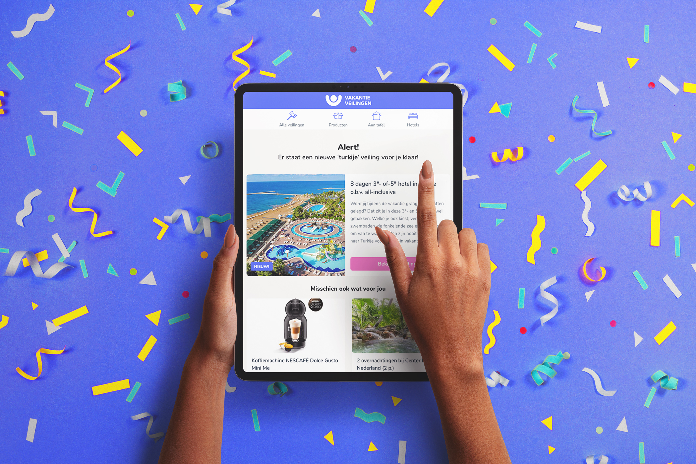

Search Alert Feature
Helping users save and set alerts for the items they're interested in with a new feature.
Overview
I designed an alert feature for VakantieVeilingen that notifies users of new auctions, collaborating with users and stakeholders to map the user flow and validate the concept before handoff to development.
Problem
It's almost summer, and many users are ready to book their dream vacation, but there aren't any auctions for their destination to be found yet.
What if we could notify our users as soon as they become available?
Process
Exploration, inspiration, definition
I explored the current user experience, looked into different implementations of alert features, and explored how it would work on our platform and what designs I needed to deliver.
I kicked off by investigating the current search experience, in particular when a search returns nothing of irrelevant listings.
Exploring alert functionalities
I also looked into a variety of other implementations of the alert functionality, trying it out myself on several platform and taking note of the different functionalities such as alert frequency and how alerts are managed.

Mapping the flow
Using Miro, I created a user flow to visualize the proposed feature's functionality and design elements. Doing this helped me inventorize the screens and interactions my designs had to account for.
Design and iteration
After, I used Sketch to iteratively design the feature screens, icons, and email notifications.

I presented my designs to the team, and I received positive feedback about the incorporation of the the feature into the search results page, but they also stressed that it can't take up too much screen real estate. Understanding the potential harm to our conversion, I swapped the feedback message out for a different solution.


Handover
Returning to Miro, I integrated the finalized screens into the user flows, communicating the proposed feature's user experience and functionality for further implementation by sharing it in the Jira ticket, providing the development team with guidance for the next phase of implementation.

Reflection
This was a smaller task during my internship that taught me a lot about the importance of user flows, in this case the user could interact with the feature in many different ways, resulting in many states that had to be accounted for. Mapping these interaction flows gave me a clear idea of what screens needed to be crafted before even opening Sketch. I also found the completed user flow, supplemented by my designs, especially useful for the collection of feedback and handover.
Unfortunately, there was no opportunity during my internship to test or gather user feedback on the feature. However, if I had the chance now, I would probably start, at the very least, with a painted door test to gauge user interest in the feature and viability before committing resources on development.